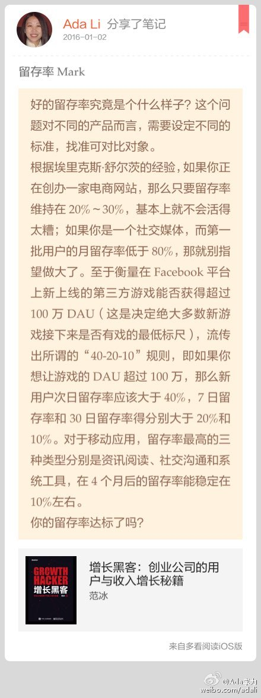
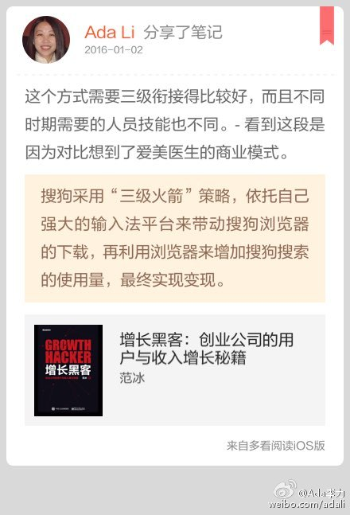

留存率Mark//#多看笔记# “好的留存率究竟是个什么样子？这个问题对不同的产品而言，需要设定不同的标准，找准可对比对象。 根据埃里克斯·舒尔茨的经验，如果你正在创办一家电商网站，那么只要…” 摘自《增长黑客：创业公司的用户与收入增长秘籍》 @多看阅读 网页链接 
这个方式需要三级衔接得比较好，而且不同时期需要的人员技能也不同。- 看到这段是因为对比想到了爱美医生的商业模式。//#多看笔记# “搜狗采用“三级火箭”策略，依托自己强大的输入法平台来带…” 摘自《增长黑客：创业公司的用户与收入增长秘籍》 @多看阅读 网页链接 
回复@UsrDel:真需求//@UsrDel:我觉得应该从付费对用户的过滤来看. 对于多数人, 付费意味着作决定前, 更多地考虑产品能否满足需求. 比如游戏, 至少要"看起来好玩", 用户才会付费. 所以付费是用户满意度的预筛选. 基础满意度高了, 抱怨就少了.@Ada李力:免费用户往往更加挑剔。- 为什么？
现在还没有方法论，大家还都在不同点上摸索。@程时旭:未来社群的经营会是一个巨大热点，商家希望广告投放更精准，因此聚焦在社群领域的LinkedIn、豆瓣、新浪微博等等，巨大的商业价值还没有被释放。也许还会有更好的商业模式。人们不只是希望简单的通过关键字搜索来寻找潜在客户，兴趣和社交关系推荐，如果转变成实际用户，将会产生另一个百度、Google。
Nod//@林中路边: 付费用户购买前大多数是深思熟虑过，也能容忍不足和缺陷，主要是购买所需要的服务。 免费用户的问题是：他们不知道自己的需求是什么，也不知道需求值多少钱。@Ada李力:免费用户往往更加挑剔。- 为什么？